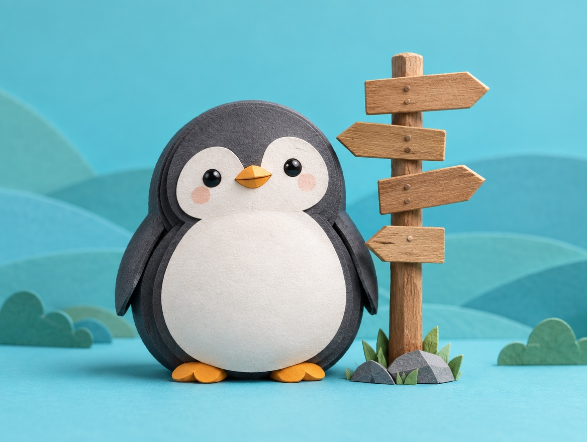

🐧 EVERYDAY LIFE⚡ 15 SEC
Each person has a different "should," so whisper "there are people like that" 🎡

Many Shoulds
"Should" is different for each person.
Reply Speed
For example, some people think, "You should reply right away," and others think, "The next day is fine."
⚡ TRY IT
The "should" roulette
Irritation100%
Spin to see what other penguins think they "should" do.
Reply right away!
The next day is fine.
Come 10 minutes early!
Just on time is fine.
Eat ramen quietly!
Slurp it! It tastes better.
Cafes are for studying!
Cafes are for chatting!
Pack the night before!
Pack in the morning!
Gifts should be a surprise!
Just ask what they want!
Spin, then whisper the magic words. 5 times!
🍃 Irritation 0%! There really are all kinds of penguins.
Whisper This
When you feel annoyed, whisper in your heart, "There are people like that."
A Bit Smaller
Just that makes your irritation a little smaller.
📚 I learned this from the Japanese blog "Panda no Ondo".
PREVIOUS POST
Say "this is getting interesting" when trouble comes, and you feel stronger